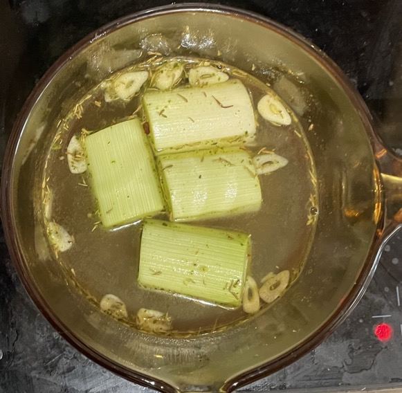

Leeks
Roasted
- Cover so don't burn
- Cook at 180°C for 20-30 mins
Braised
- Split leeks in half lengthways
- Remove outer skin
- Rinse and pat dry
- Heat olive oil in pan on medium high heat until shimmering
- Add leeks cut side down and heat without moving for 5 mins until browned
- Place leeks in baking dish
- Dot top of leeks with butter
- Pour over leeks
- 250ml stock
- ½ tsp thyme
- pepper
- Cover with foil and cook in oven at 190°C for 30 mins
- Allow to cool for 5 mins
- Add to pan juices and pour over leeks
- 2 tsp lemon zest
- 2 tsp lemon juice
Braised with peas
- Simmer in pan for 15 mins
- 1 leek outer skin removed and quartered
- 300ml stock
- clove garlic sliced
- ¼ tsp thyme
- pepper
- Add and heat for 5 more mins
- Drizzle with olive oil (optional) and season with pepper
